Inglés general
Para todos los alumnos
- Inglés práctico y por proyectos
- Presentaciones, comunicación y trabajo en grupo
- Grupos reducidos por nivel
Desde los primeros pasos en inglés hasta estudiar en colegios del extranjero.
Descubre todas las formas de aprender y vivir el inglés con Interlanguage.
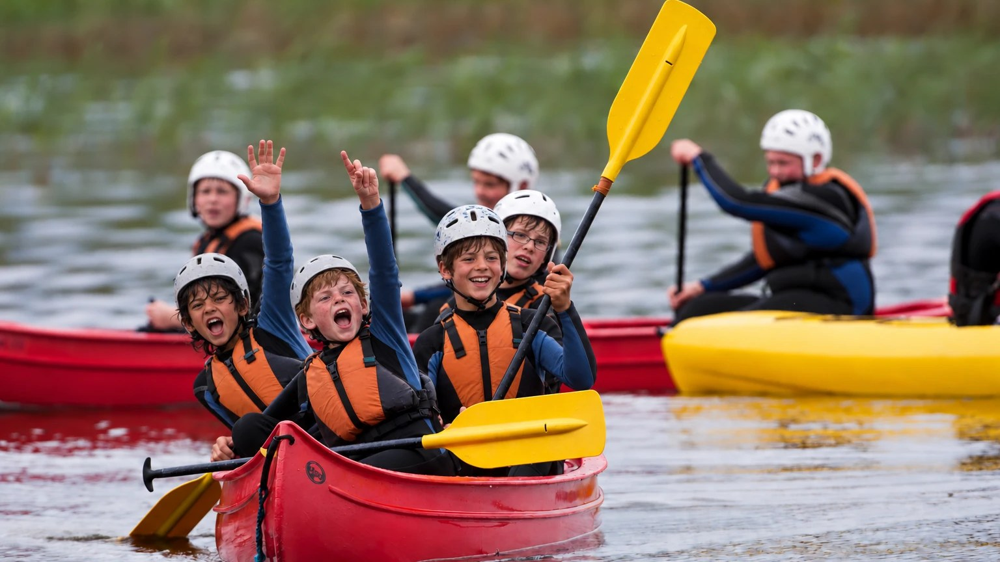
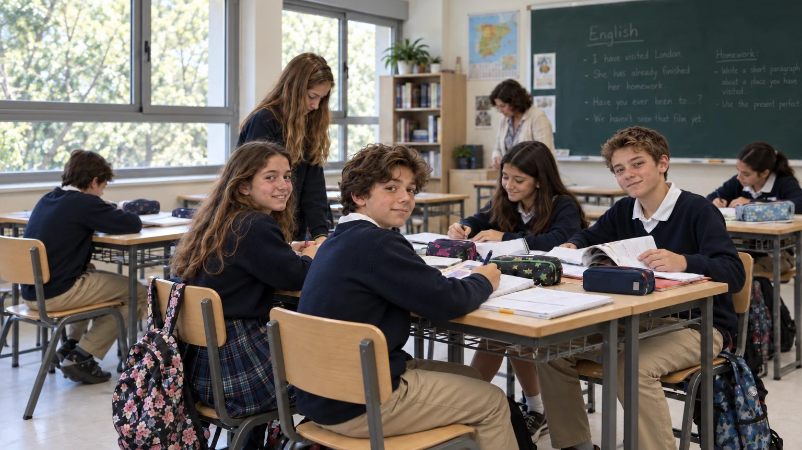
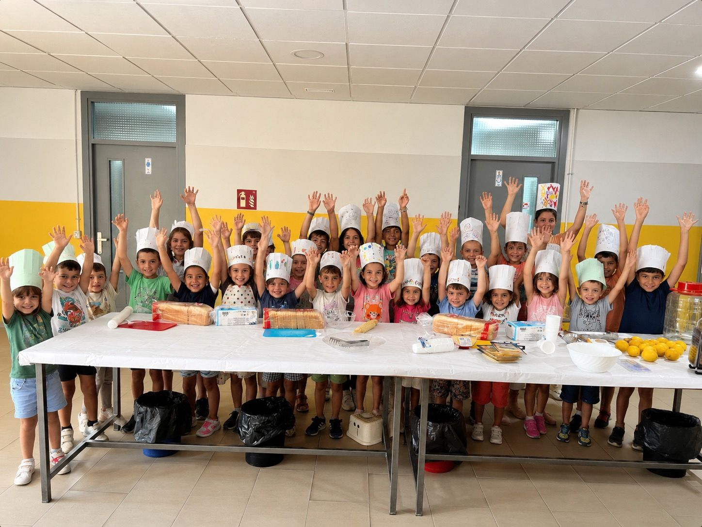
Desde los primeros pasos en inglés hasta el final del colegio: un mismo camino, con un programa para cada etapa.
Aquí empezamos
Hasta el final del colegio
Canciones, juegos y primeras conversaciones para familiarizarse con el inglés.
Campamentos de verano en Madrid · Inglés extraescolar en el colegioMás vocabulario y confianza para participar, preguntar y compartir ideas.
Inglés extraescolar en el colegio · Campamentos de verano en Madrid y en el extranjeroConversaciones, nuevos retos y mayor autonomía para comunicarse.
Campamentos de verano en el extranjeroExplora colegios en el Reino Unido, Irlanda o Estados Unidos. Os ayudamos a elegir el que mejor encaja con lo que buscáis.
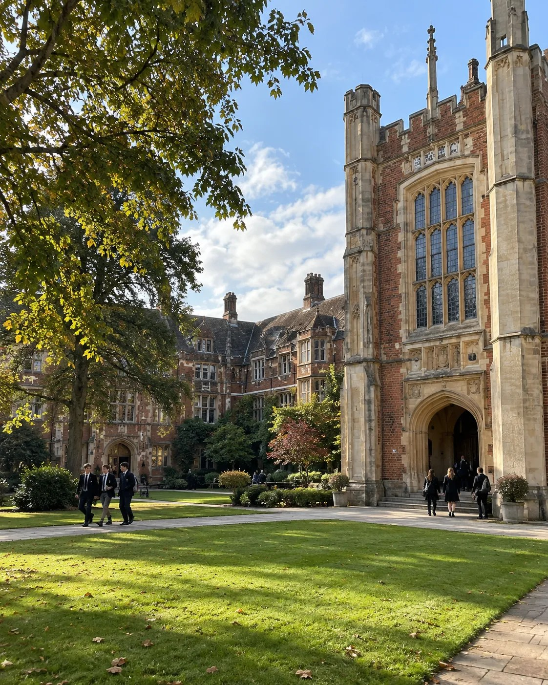
Cómo es, qué le interesa y qué esperáis vosotros de esta experiencia.
Un equipo cercano y con criterio, con presencia en Madrid y Londres.
Su perfil, sus intereses y vuestras prioridades como familia.
Colegios que encajan, con las razones de cada propuesta.
La admisión y los trámites previstos en el programa que elijáis.
Contadnos qué buscáis y os ayudamos a encontrar la mejor opción para vuestro hijo o hija.Con la edad, el curso y lo que te interesa, te orientamos sobre destino y modalidad. Es una conversación, sin compromiso.
Consulta sobre
VolverTu llamada está reservada. Te llamaremos al número indicado.
Cancelar la llamada Si no puedes atendernos, cancélala y reserva otra hora.
Retos diarios en inglés basados en las ocho inteligencias múltiples, con monitores 100 % nativos y grupos por edad. Con el método TalenTalk®, que aplicamos desde 2002.
Todavía no hay convocatoria abierta: publicaremos aquí las fechas, la sede y las tarifas cuando estén confirmadas.
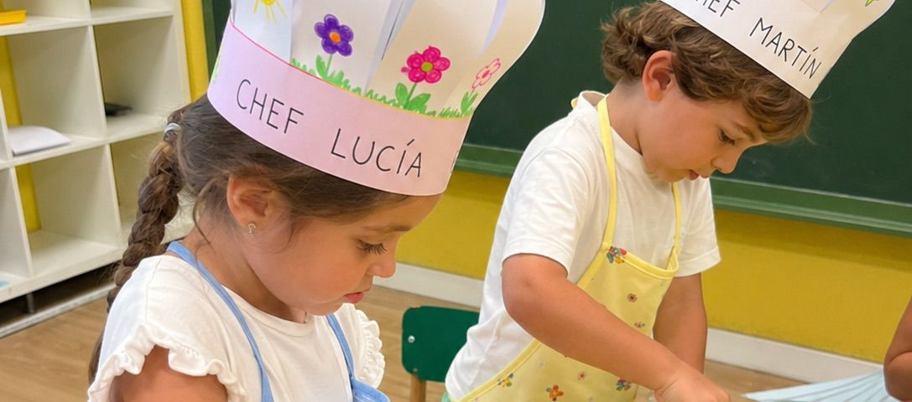
Por confirmar
Todavía no hay convocatoria abierta.
Por confirmar
Los publicaremos aquí junto con las fechas.
Ocho retos distintos, un descubrimiento cada día; cada reto trabaja una inteligencia diferente.
Y un reto sorpresa cada día.
Dos dinámicas distintas, cada una pensada para su momento.
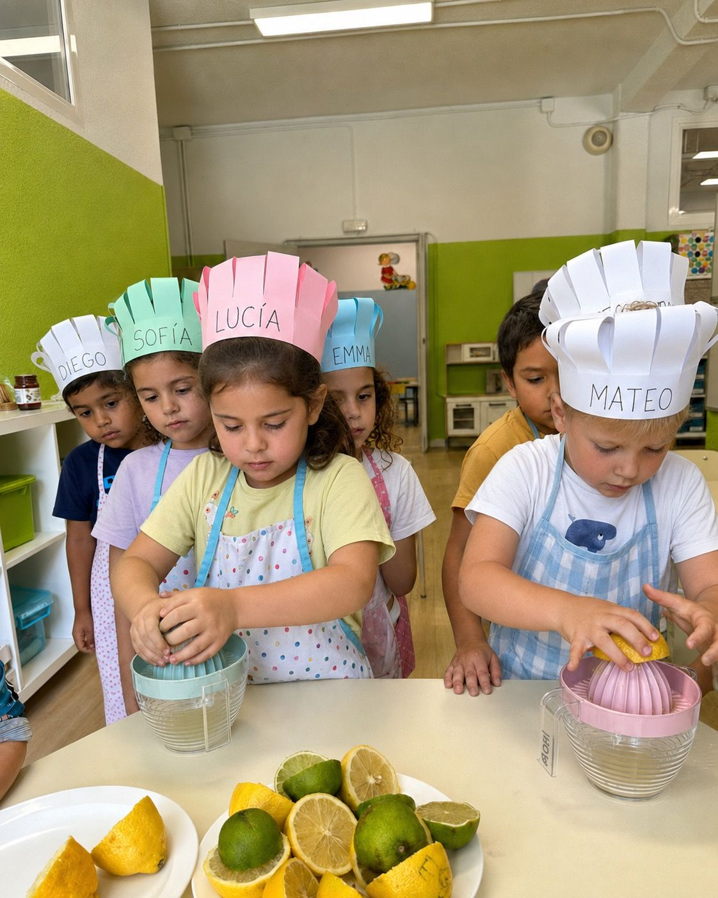
Juego guiado, ritmo tranquilo y primeros pasos en cada inteligencia, en grupos por edad.
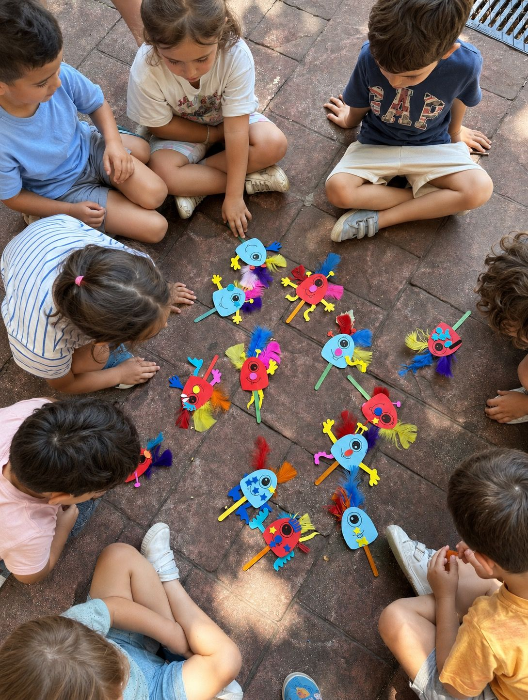
Más autonomía: cada día eligen entre varios retos, en grupos organizados por edad y nivel.
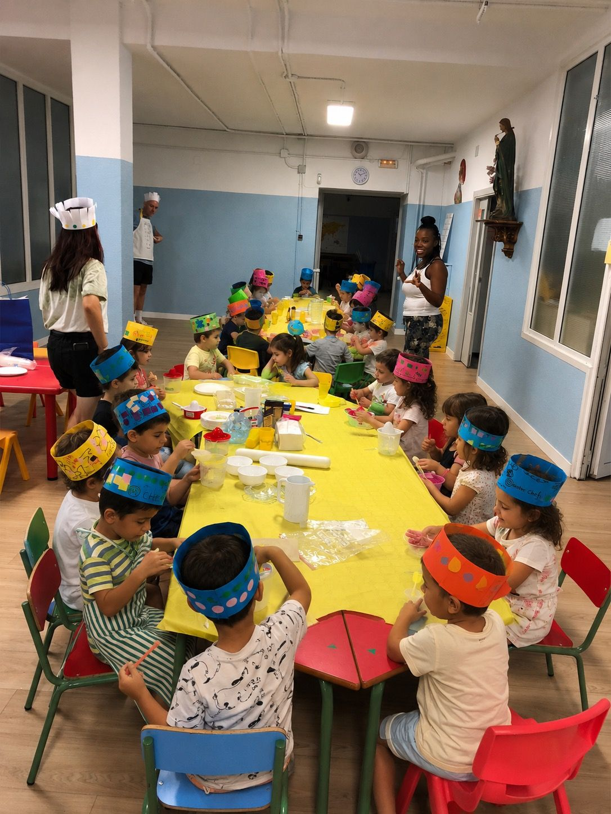
Booklet de inglés, storytelling y arts & crafts
Merienda y cambio de ropa para los juegos de agua
La actividad más esperada del día
Nos secamos y nos preparamos para seguir
Teatro, deporte o experimentos, según el día
Almuerzo y descanso antes de la recogida
Horario de la última edición; se confirmará con la próxima convocatoria.
Todavía no. Cuando estén confirmadas, publicaremos aquí las fechas, la sede y las tarifas. Si quieres consultar algo antes, escríbenos.
Trabajamos en grupos por edad. Las edades de la próxima edición se confirmarán junto con las fechas.
Monitores 100 % nativos, formados para trabajar con niños.
Cuando haya convocatoria, explicaremos cómo inscribirse. Consultar por el campamento no reserva ni confirma ninguna plaza.
Cuéntanos la edad de tu hijo o hija y qué buscáis, y te orientamos sin compromiso.
Consultar próximo campamentoDel campamento de verano en Madrid a vivir un verano, o un curso entero, en el extranjero. Acompañamos a las familias en cada etapa del camino.
Del 22 de junio al 24 de julio
Cinco semanas. Elige las que quieras; no hace falta que sean seguidas.
Madrid
Sagrado Corazón Rosales y Sagrado Corazón Chamartín.
Se admiten alumnos de otros colegios, no hace falta ser del Sagrado CorazónEl precio total depende del número de semanas que elijas, sean o no consecutivas.
Comedor opcional: 52 € por semana, con un mínimo de 25 alumnos apuntados.
Elige las semanas, completa los datos y envíanos tu solicitud. Revisaremos la disponibilidad antes de confirmar la plaza.
Clases con profesores nativos y en grupos reducidos, durante todo el curso. Para que cada alumno gane soltura y nivel hablando inglés.
Si tu colegio es otro, consúltanos su horario y tarifa.
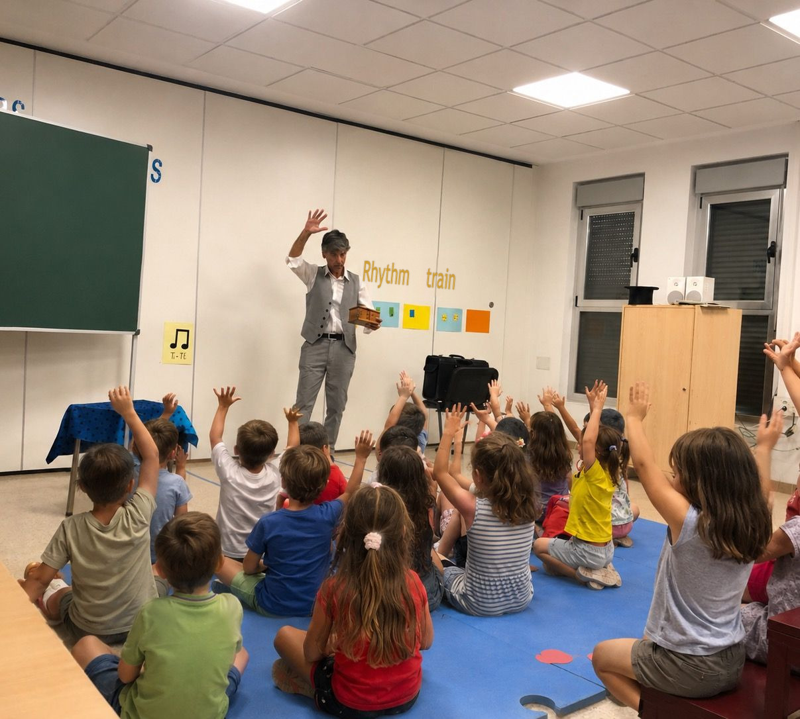
Cuatro cosas que ocurren en cada sesión, se trabaje lo que se trabaje.
Escuchan y hablan en inglés desde el primer momento, con profesores nativos.
Aprenden a decir lo que piensan y a defender sus propias ideas.
Progresión adaptada a su etapa.
Juegos, proyectos y trabajo en equipo como forma de aprender, no como premio.
El mismo método, adaptado al momento de cada alumno. Consulta qué clubs se imparten en tu colegio.
A través del juego, favoreciendo la comprensión oral y sus primeras conversaciones.
Recreaciones dinámicas, diálogos cortos, cuentos y canciones.
Proyectos específicos que enriquecen sus habilidades comunicativas.
Situaciones y prácticas activas para impulsar su nivel.
Exámenes de Cambridge: KET, PET, FCE y CAE.
Y cuando llegue el momento de dar el salto, seguimos a vuestro lado: un verano o un curso escolar en el extranjero, con el mismo equipo que ya conoce a vuestro hijo.
Cada etapa educativa tiene su propio club, con objetivos y dinámicas adaptadas. Los cursos que se imparten dependen de cada colegio: consúltanos el tuyo.
Por etapa educativa, en grupos reducidos que se abren desde 8 alumnos, para que todos tengan tiempo real de hablar.
Sí. Todo el claustro es nativo y está formado específicamente para enseñar a niños y jóvenes, no solo para hablar el idioma.
El programa va de octubre a mayo, siguiendo el calendario escolar, en horario de tarde dentro del propio colegio.
En el Colegio Sagrado Corazón, 65 € al mes más 35 € al año de material. Si tu colegio es otro, escríbenos y te confirmamos las condiciones.
Cuéntanos su curso y qué buscáis, y te orientamos sin compromiso.
Pedir orientaciónDe una a cuatro semanas en internados británicos, con clases de inglés cada mañana, tardes a elegir, excursiones y alumnos de más de 20 países.
Fechas de 2027. Las plazas de cada colegio son limitadas.
Programas acreditados por el British Council.
Se puede ir de una a cuatro semanas, y el precio depende de cuántas. Las estancias empiezan en domingo (en miércoles en Inglaterra); las fechas de cada colegio están más abajo.
Noche extra: … €, según disponibilidad. Suplementos de tarde: hípica, aventura, golf, descubrir el país y más inglés.
Lo que más preocupa a una familia, explicado claramente.
Habitación individual o compartida, con baños compartidos y limpieza diaria. Un equipo vive con los alumnos las 24 horas, guarda su pasaporte, su dinero y sus medicinas, y les da la medicación a su hora.
Les esperan en la salida del aeropuerto y los llevan al colegio en minibús desde Edimburgo, Heathrow o Gatwick. El traslado tiene un coste aparte.
Cómo viajan: vuelo en grupo desde Madrid con un monitor de Interlanguage, o solos como menor no acompañado.
Cómo y cuándo pueden hablar con vosotros durante el campamento.
No se usan en clase, en las actividades, en las comidas ni por la noche. El equipo los guarda; la familia puede pedir otra cosa por escrito.
Sin alcohol, tabaco ni vapeo. Chicos y chicas solo coinciden en las zonas comunes. Tolerancia cero con el acoso.
El inglés deja de ser una asignatura y se convierte en la lengua de todo el día.
Cada mañana, de 9:00 a 12:30, en grupos reducidos y con profesores cualificados. Aprenden presentando, creando y trabajando en equipo.
Conviven con chicos y chicas de más de 20 países. El inglés es lo que tienen en común.
Deporte, aventura al aire libre, golf, hípica, arte o descubrir el país: cada uno elige su plan.
Un equipo vive en la residencia con los alumnos: conoce a cada uno y está pendiente de él día y noche.
Todos los alumnos tienen 15 horas de inglés a la semana. Los mayores pueden elegir el programa de liderazgo.
Para todos los alumnos
14 a 17 años · nivel B1 o superior
El programa de liderazgo se imparte en Dollar Academy; en otros colegios, consultadlo.
Colegios británicos con residencia, instalaciones deportivas y campus seguros. Os ayudamos a elegir el que mejor encaja con su edad y lo que le gusta.
Dollar · a 45 min de Edimburgo
Único colegio con el programa de inglés y liderazgo.
Perthshire · a 1 h de Edimburgo
El único que admite desde los 8 años.
Musselburgh · a 8 min en tren de Edimburgo
Junto al mar y con la temporada más larga.
Godalming (Surrey) · a 45 min de Londres
Para quien quiere conocer Londres.
Habitaciones individuales o compartidas, con baños compartidos. Limpieza diaria.
Las tardes son para descubrir aficiones. Algunas opciones tienen un suplemento.
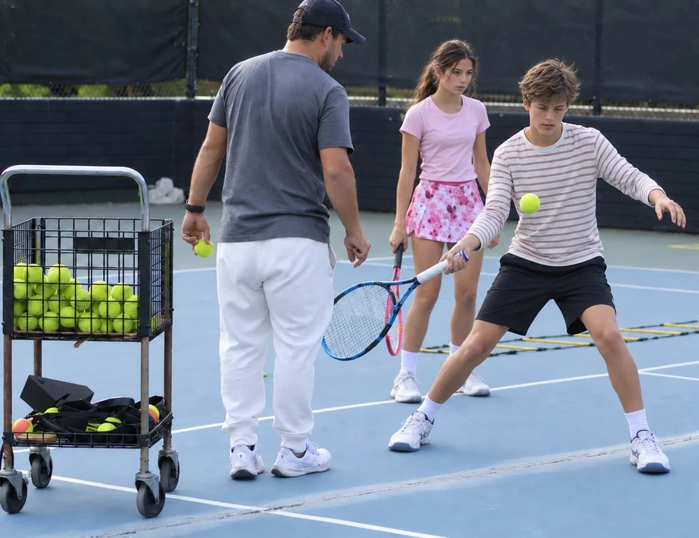
Fútbol, tenis, baloncesto, natación… cada día, el que prefieran.
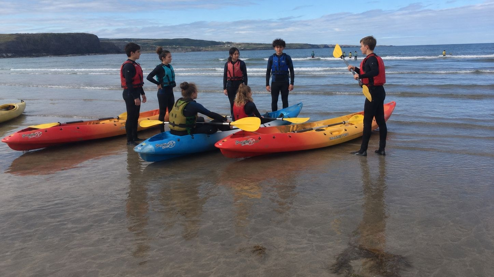
Retos en equipo, juegos al aire libre y actividades creativas.
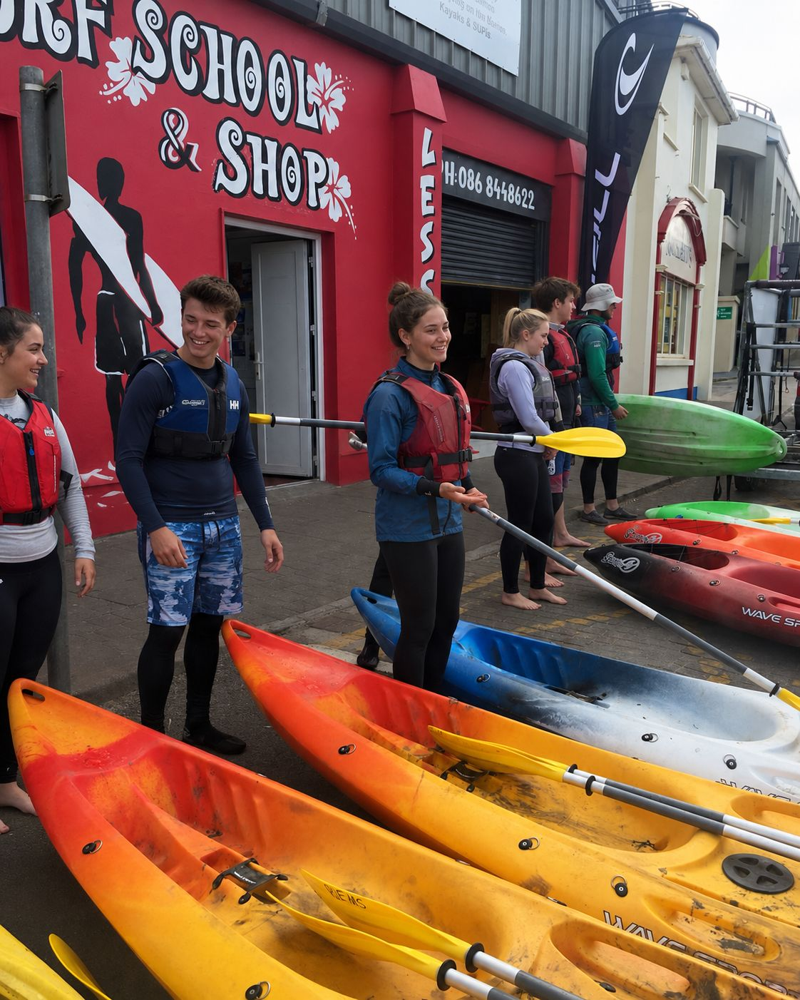
Kayak, paddle surf, tiro con arco y circuitos de agua, con monitores especializados.
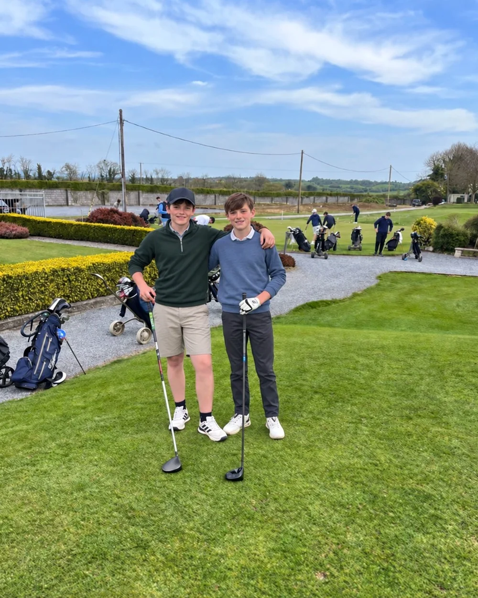
Clases con un profesional en un campo cercano, para todos los niveles.
Para quien empieza y para quien ya monta: cuidado del caballo, pista y paseos.
Escriben su propia historia, la ilustran y la representan.
Castillos, paisajes, ciudades y playas, con la cultura y la historia del lugar.
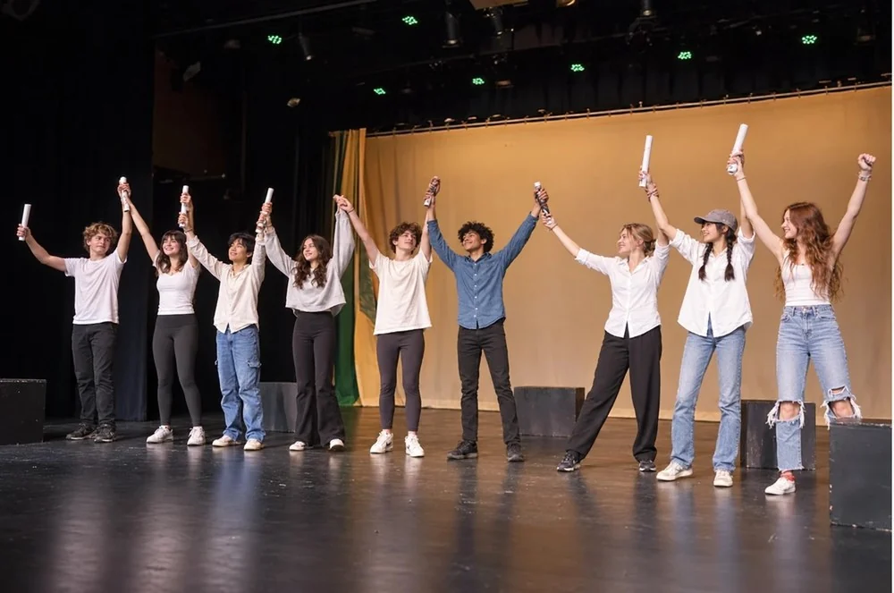
Debates, presentaciones y escritura, en grupos de 5 como máximo.
El mismo horario en los cuatro colegios.
Horarios aproximados. Los mayores se acuestan a las 23:00.
Los fines de semana salen a conocer el país. Además, entre semana hay salidas de media tarde.
Son ejemplos: los destinos varían según el colegio, las fechas y el tiempo.
El último día reciben su certificado en una ceremonia de graduación y diseñan su propia camiseta, firmada por los amigos que han hecho.
por semana
Hay tienda en el campus y tiempo para compras en las excursiones. El equipo guarda el dinero.
Mejor sin objetos caros. Si toma medicinas o tiene alergias, avisadnos antes.
Edad, nivel de inglés, fechas y lo que le gusta.
Con el precio cerrado y lo que incluye.
Con una señal del 10 %; el resto, antes del 15 de mayo de 2027.
Documentación, maleta y vuelos, para que viaje tranquilo.
Cancelación: hasta 30 días antes de la llegada se devuelve todo salvo la señal; después, no hay devolución.
Desde los 8 años en Strathallan School y desde los 10 en los otros tres colegios, hasta los 17.
No hace falta un nivel concreto: las clases son en grupos reducidos por nivel. Para el programa de liderazgo, un B1.
Pueden elegir habitación individual o compartida. Los baños son compartidos y se limpian a diario.
Los campamentos reciben alumnos de más de 20 países, así que el inglés es la lengua de todos.
Sí, en su tiempo libre. No en clase, en las actividades, en las comidas ni por la noche.
El equipo de la residencia le atiende y os avisa. Por eso el seguro médico es obligatorio.
Hay traslados en minibús desde Edimburgo, Heathrow y Gatwick, con coste aparte. Les esperan en la salida con un cartel.
Cuanto antes: las plazas son limitadas y el pago completo es antes del 15 de mayo de 2027.
Contadnos su edad, su nivel y qué fechas tenéis en mente, y os proponemos el colegio que mejor encaja. La orientación es gratuita.
Pedir orientaciónSi el campamento le engancha, el siguiente paso puede ser un trimestre o un curso escolar en el extranjero.
Buscamos con vosotros el colegio adecuado para vuestro hijo y os acompañamos en cada paso, de la primera conversación a su llegada.
Lo importante es encontrar el colegio adecuado para vuestro hijo. Contadnos qué buscáis y qué presupuesto tenéis en mente, y os proponemos los destinos y colegios que mejor encajan.
Para situaros. La valoración de cada colegio la hacemos con vosotros: la admisión, las fechas y las plazas dependen de cada centro.
| Criterio | ||
|---|---|---|
| Edad y curso | 7 a 18 añosDesde 7 años en un preparatorio; otros colegios admiten cursos posteriores. | 10 a 18 añosEn secundaria; el curso de entrada depende del colegio. |
| Alojamiento | InternadoEn el colegio; apertura y fines de semana según centro. | Internado o familia anfitrionaInternados de 5, 5½ o 7 días, o colegio de día con familia. Apertura según centro. |
| Duración | Curso completoTambién uno o dos trimestres en algunos colegios, según plazas. | Curso completo o trimestresLa disponibilidad de cada modalidad se confirma con el centro. |
| Tipo de colegio | Independiente y mixtoAlumnado interno y de día, en Inglaterra y Escocia. | SecundariaInternado o de día. La mayoría son mixtos; algunos, solo de chicos o de chicas. |
| Admisión y nivel de inglés | Informes, entrevista o pruebasPuede incluir una jornada de prueba o valoración de inglés, según centro. | Se revisa con cada colegioAntes de proponer una plaza. |
| Vida escolar y actividades | Actividades de tarde y fin de semanaPara internos en varios colegios; la oferta depende del centro. | Deporte de equipo, música o culturaCambian de un colegio a otro. |
| Criterio | Reino Unido | Irlanda |
|---|---|---|
| Zona | Suroeste y norte de Inglaterra, este de EscociaCerca de Edimburgo. Inglaterra y Escocia tienen currículos y exámenes distintos. | Dublín y varios condadosSur, oeste y noroeste. |
| Apoyo de inglés | Apoyo de inglés (EAL)Disponible en varios colegios, en ocasiones con coste adicional. | A confirmar con cada colegio |
| Guardian | Un adulto responsable en el Reino UnidoReside en el país y algunos colegios lo exigen para los internos internacionales. | A confirmar con cada colegio |
| Tradición religiosa | A confirmar con cada colegio | Algunos internados tienen tradición religiosaCatólica, Church of Ireland o cuáquera. También hay colegios de día comunitarios y multiconfesionales. |
| Continuidad académica | Algunos centros ofrecen el IBEn Sixth Form. La equivalencia del curso se revisa en cada caso. | Se revisa con cada colegioY en cada caso. |
La vuelta a los estudios en España debe valorarse según el curso realizado y la etapa educativa. Conviene revisar los requisitos oficiales de homologación o convalidación para cada caso. Información oficial.
De la primera conversación a la llegada del alumno.
Hablamos de su perfil y de lo que os importa.
Sabéis qué incluye antes de decidir.
Colegios que encajan, y su admisión coordinada.
Os acompañamos hasta la llegada.
Según el destino y el servicio contratado: la propuesta detalla qué incluye y qué queda fuera. *Depende del caso.
Ejemplo ilustrativo · No es un caso real
Cómo decidimos. Descartamos los colegios que no cumplen lo imprescindible (tradición católica, plazas para su curso y presupuesto) y comparamos el resto en lo que más os importa.
¿Hablamos de vuestro caso?
Pedir orientaciónContadnos desde el principio qué presupuesto tenéis en mente: lo tenemos en cuenta al seleccionar colegios. El coste depende sobre todo de:
La propuesta detalla qué incluye y qué se abona aparte (viajes, traslados, apoyo de inglés o alojamiento en cierres, cuando corresponda).
Pedir orientaciónClases, convivencia y tiempo libre: el colegio será su entorno cotidiano.
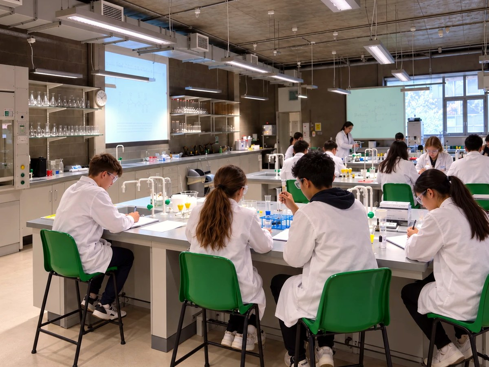
Una educación que une teoría y práctica: se aprende participando, con laboratorios, proyectos y debates, y se cuida el desarrollo de cada alumno.
Ver admisión y nivel de inglés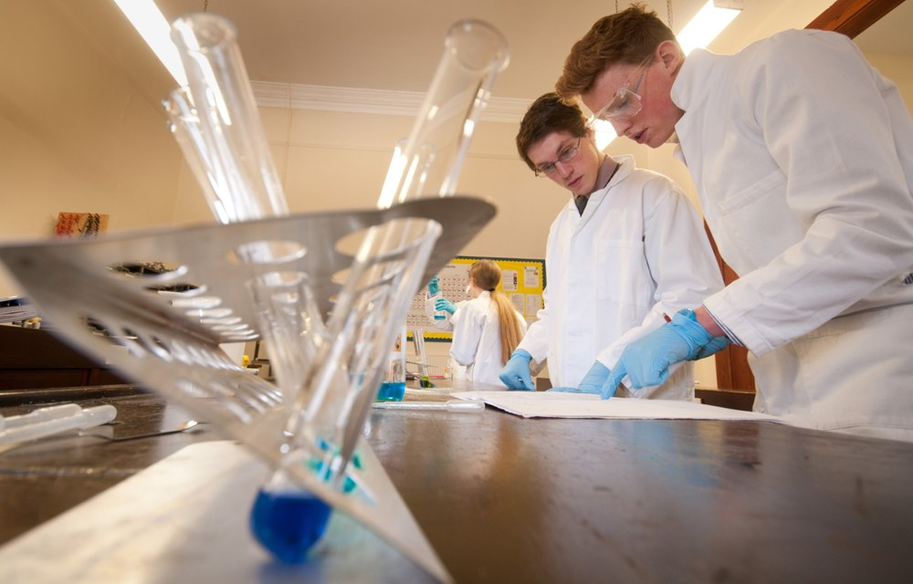
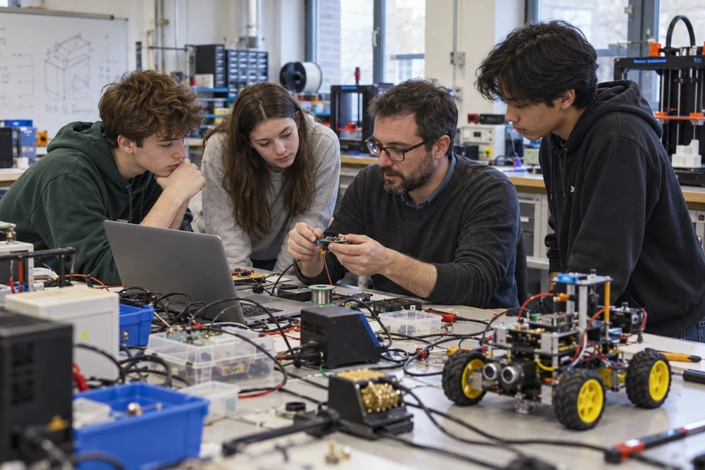
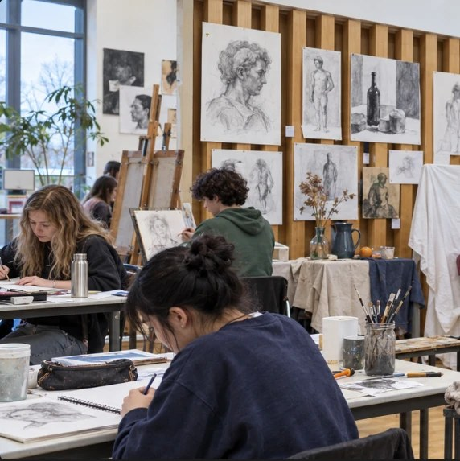
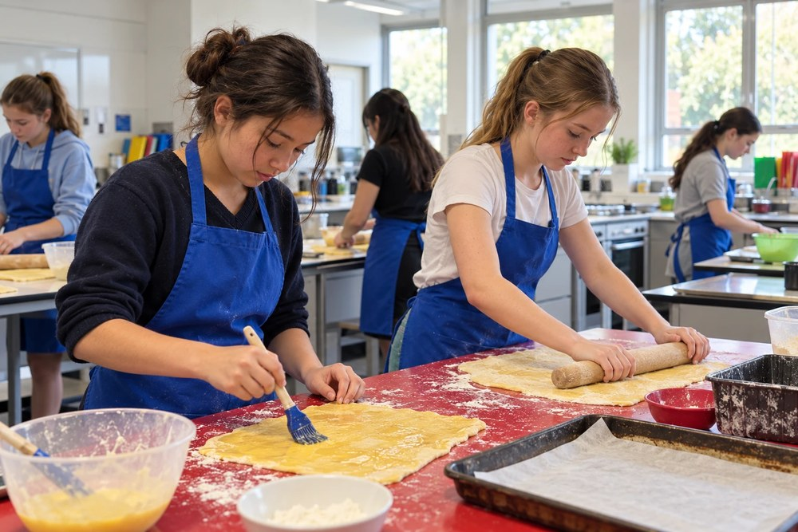
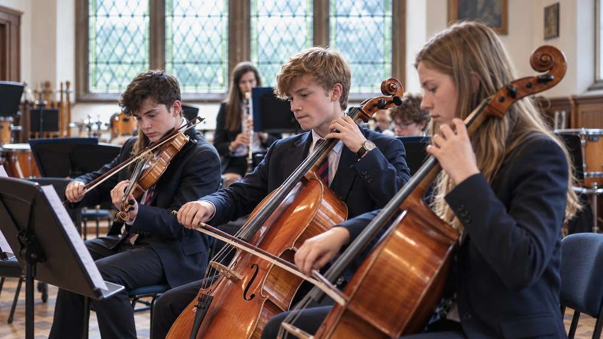
Vivir fuera de casa les hace madurar. En un internado aprenden a organizarse y a convivir; con una familia anfitriona, el idioma y la vida diaria continúan en casa.
Ver alojamiento por destino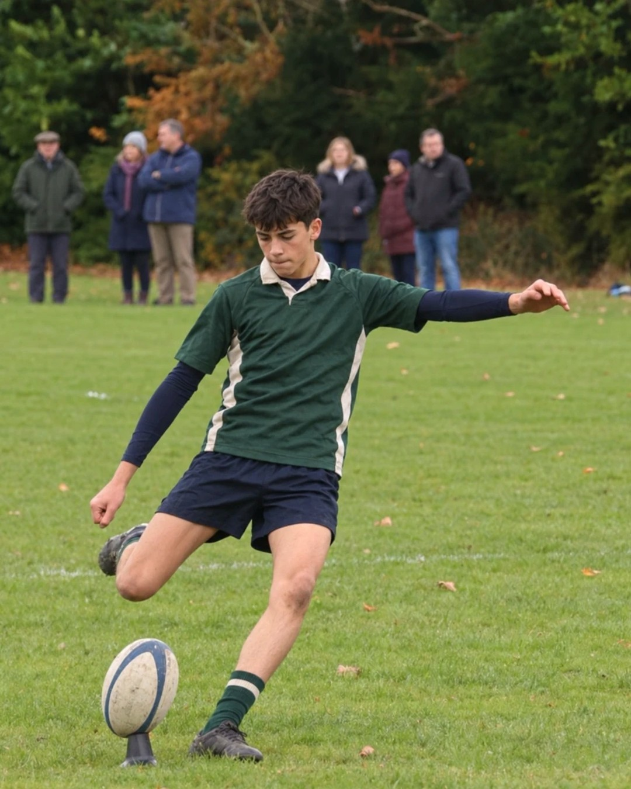
Deporte, música, teatro, arte y otras muchas actividades para descubrir aficiones nuevas.
Ver actividades por destino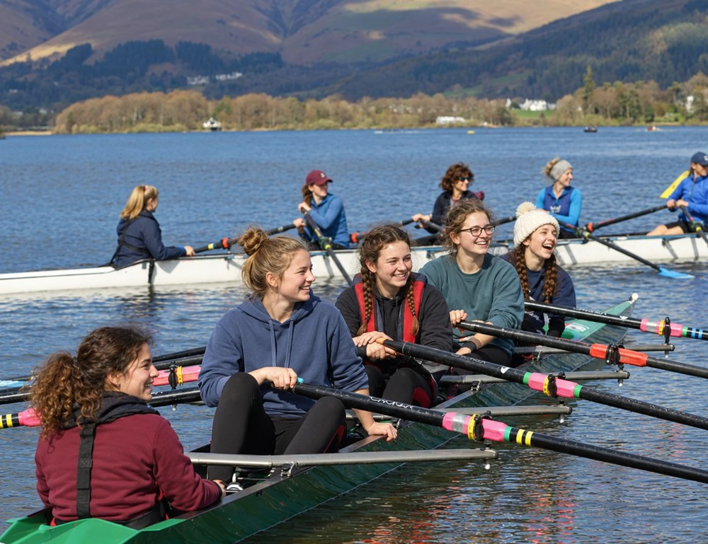
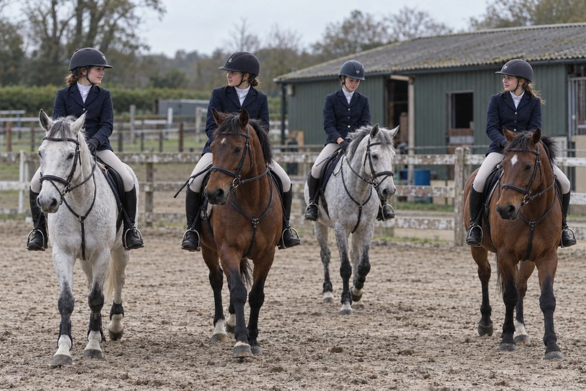
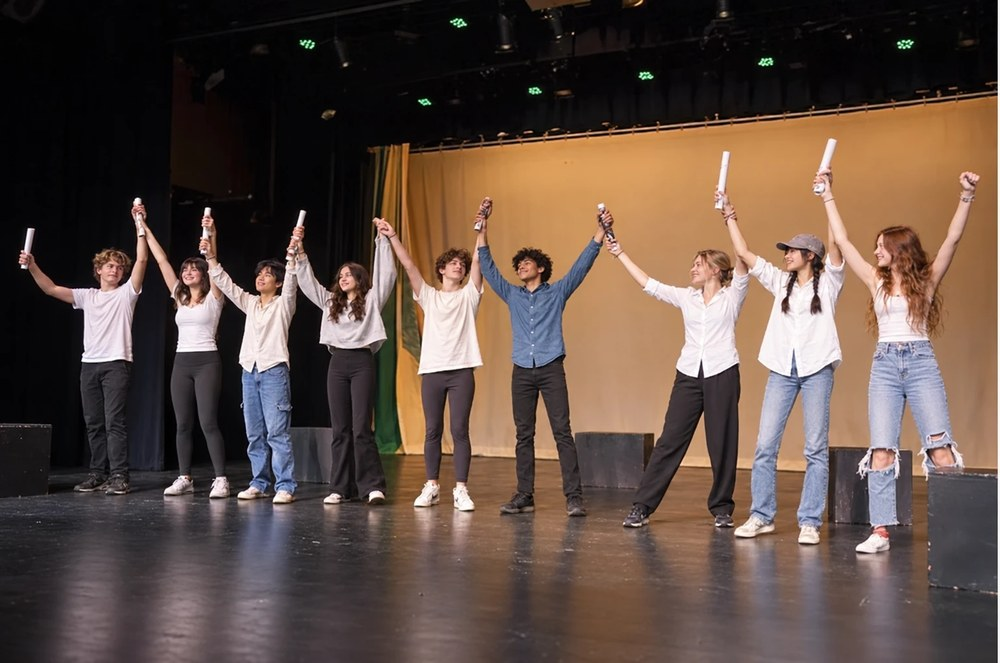
En el Reino Unido hay un centro preparatorio con internado de 7 a 13 años; otros centros empiezan en cursos posteriores y llegan hasta los 18. En Irlanda, el tramo es de 10 a 18 años y el curso de entrada depende del colegio. En Estados Unidos, las opciones se estudian bajo consulta.
Depende del destino, la duración y el colegio. Os lo detallamos en la propuesta, con lo que incluye y lo que se abona aparte.
Recomendamos empezar con un curso escolar de antelación, porque las plazas pueden agotarse. Si consultáis más tarde, revisamos las plazas disponibles para valorar si aún hay una opción adecuada.
Sí. En el Reino Unido, algunos colegios admiten uno o dos trimestres, con plazas limitadas; otros solo el curso completo. En Irlanda gestionamos cursos completos y estancias por trimestres. La disponibilidad se confirma con el colegio elegido.
No hace falta tenerlo decidido. Contadnos la edad, el curso y lo que buscáis, y os orientamos sin compromiso.
No. Es una conversación para que tengáis la información. La decisión es vuestra.
Programas monográficos que usan una pasión concreta (teatro, música o ciencia) como vehículo para practicar inglés, para niños que ya tienen una base y quieren llevarla más lejos.
Somos el equipo de Interlanguage. Llevamos más de 30 años enseñando inglés en Madrid y trabajamos siempre igual: conocemos a cada alumno, escuchamos a su familia y seguimos de cerca cómo avanza.
Pedir orientaciónNo hay dos alumnos iguales, así que no los tratamos como si lo fueran.
Antes de proponerte nada, hablamos contigo y conocemos al alumno: su nivel de inglés, su carácter y sus intereses.
Trabajamos con grupos reducidos para que todos tengan tiempo real de hablar en inglés.
Seguimos su evolución curso a curso y te mantenemos cerca del proceso.
Cada familia tiene un referente que la acompaña en cada etapa. Si necesitas algo, sabes con quién hablar.
Empezamos con clases de inglés y campamentos de verano. Con los años hemos ampliado los programas para acompañar a niños y jóvenes desde sus primeros pasos con el idioma hasta sus experiencias en el extranjero, siempre con la misma idea: un idioma no se memoriza, se vive.
Cuéntanos la edad de tu hijo o hija y qué buscáis. Te explicamos qué opciones encajan y por qué, sin compromiso.
Cuéntanos su edad, su nivel y qué buscáis. Una persona del equipo se pone en contacto contigo, sin compromiso.
Pedir orientación